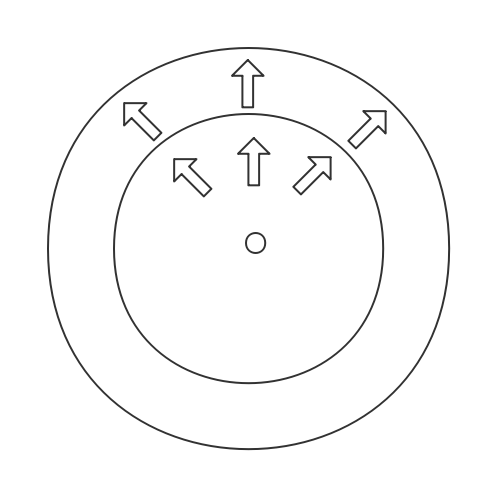
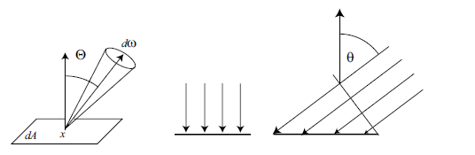
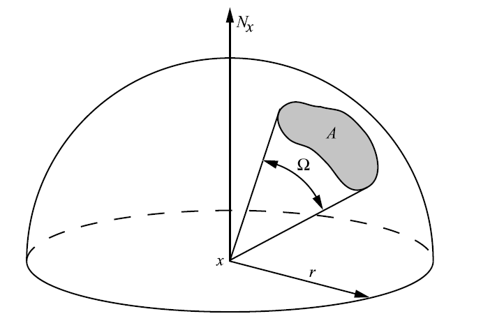
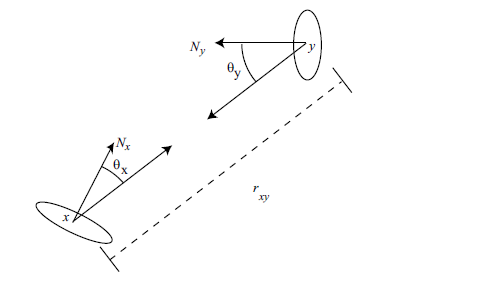

光模型
图形学中使用最常用的是几何光学,该模型中,物体的尺寸远大于光的波长
几何光学中,衍射,干涉以及极化现象是不会发生的.
几何光学假定光是发射,反射以及透射,并对于光的行为做出如下假设:
- 直线传播
- 传播速度无限快,用于保证场景光能的温态分布
- 不受其它因素的影响,如重力,磁场
辐射度
全局光照的目的就是计算场景光能的稳态分布,因此涉及到一些光的物理量
通量(Flux)
辐射通量也称之为功率,为每单位时间通过一个表面或区域的所有能量，单位为焦尔每秒J/s或瓦W,通常用符号$\Phi$
下图中通过两个球面的通量是一样的

辐照度(Irradiance)
辐照度为每单位面积上的入射辐射通量,单位为$W/m^2$
$$E = \frac{d\Phi}{dA}$$
辐射出射度(辐射度Radiosity)
辐射出射度(M)也称之为辐射度(B),为每单位面积上的出射辐射通量,单位为$W/m^2$
$$M=B=\frac{d\Phi}{dA}$$
辐射率
辐射率为每单位投影面积每单位立体角上的辐射通量
$$L = \frac{d^2\Phi}{d\omega dA^{\perp}}=\frac{d^2\Phi}{d\omega dA\cos\theta}$$

对着半球上一块区域的立体角$\Omega$定义为区域面积除以半球半径的平方,即:
$$\Omega = \frac{A}{r^2}$$

各个量的关系
$$
\begin{align}
\Phi \quad &= \quad \int_A\int_{\Omega}L(x\rightarrow \Theta)\cos\theta d\omega_{\Theta}dA_x \notag \\[2ex]
E(x) \quad &= \quad \int_\Omega L(x \leftarrow \Theta)\cos\theta d\omega_\Theta \notag \\[2ex]
B(x) \quad &= \quad \int_\Omega L(x \rightarrow \Theta)\cos\theta d\omega_\Theta \notag \\
\end{align}
$$
辐射率属性
沿路径可交换 $L(x \rightarrow y) = L(y \leftarrow x)$
表示从点x向y发射的辐射率等于由点x到达点y的辐射率(注意一个是发射，一个是到达)
即假定光是在真空中传播,假设微分通量$d\Phi$离开微分表面$dA_x$到达微分表面$dA_y$,那么:

$$
\begin{align}
L(x \rightarrow y) &= \frac{d^2\Phi}{(\cos\theta_x dA_x)d\omega_{x\leftarrow dA_y}} \notag\\[2ex]
d^2\Phi &= L(x \rightarrow y)cos\theta_x d\omega_{x\leftarrow dA_y}dA_x\notag
\end{align}
$$
$d\omega_{x\leftarrow dA_y}$表示从x看对着$dA_y$的立体角
$$
\begin{align}
L(y\leftarrow x) &= \frac{d^2\Phi}{(\cos\theta_y dA_y)d\omega_{y\leftarrow dA_x}dA_y} \notag\\[2ex]
d^2\Phi &= L(y \rightarrow x)cos\theta_y d\omega_{y \leftarrow dA_x}dA_y\notag
\end{align}
$$
微分立体角为:
$$d\omega_{x \leftarrow dA_y} = \frac{cos\theta_y dA_y}{r^2_{xy}}$$
$$d\omega_{y \leftarrow dA_x} = \frac{cos\theta_x dA_x}{r^2_{xy}}$$
假设没有外部光源提供能量到达$dA_y$,且位于真空,不存在能量损失.根据能量守恒:
$$
\begin{align}
L(x \rightarrow y)cos\theta_x d\omega_{x\leftarrow dA_y}dA_x &= L(y\leftarrow x)cos\theta_y d\omega_{y \leftarrow dA_x}dA_y\notag\\[2ex]
L(x \rightarrow y)cos\theta_x \frac{cos\theta_y dA_y}{r^2_{xy}}dA_x &= L(y \leftarrow x)cos\theta_y \frac{cos\theta_x dA_x}{r^2_{xy}}dA_y\notag\\
\end{align}
$$
$$\Rightarrow L(x \rightarrow y) = L(y \leftarrow x)$$
该性质只在两个表面之间没有可以吸收,散射能量的介质时成立
传感器,例如相机,人眼,对辐射敏感
入射到传感器上的辐射与传感器的响应成正比,比例常熟取决于传感器的几何形状
这两个属性解释了为何感知的物体颜色与亮度不会随着距离发生变化
传输理论
假设光子的密度为$p(x)$,即在点x处每单位体积的光子数为$p(x)$,则$dV$中的光子数为$p(x)dV$
那么假设光子穿过截面$dA$,持续时间为$dt$,光子的运动方向与截面法线的夹角为$\theta$,且已知光速为$c$
因此，通过$dA$的总光子数为:
$$N = p(x,\omega,\lambda)cdtdA\cos\theta d\omega d\lambda$$
$d\omega$为微分方向,$\lambda$为波长
通量为单位时间的光子能量总数，因此：
$$\Phi \propto p(x,\omega,\lambda)dA\cos\theta d\omega d\lambda$$
$$\frac{\Phi}{dA\cos\theta d\omega} \propto p(x,\omega,\lambda)d\lambda$$
光子的能量为:$E=\frac{hc}{\lambda}$
辐射率被定义为每单位体积的辐射能:
$$L(x,\omega)=\int p(x,\omega,\lambda)h\frac{c}{\lambda}d\lambda$$
因此,可见辐射率不仅依赖位置,方向,还依赖波长,当显式指定了波长时,辐射率称之为光谱辐射
辐射率是将光谱辐射对所有的可见光波长积分：
$$L(x\rightarrow \Theta) = \int_{spectrum}L(x\rightarrow \Theta,\lambda)d\lambda$$
全局光照中对于波长的依赖往往都是隐式假定，不会显式指出.
发射光
全局光照的计算需要为每种光源指出以下三种分布:
- 空间分布:理想化的空间分布为点光源,更普遍的是区域光源
- 方向分布:由灯具的形状决定
- 频谱分布:虽然光的频谱分布可以精确模拟,但出于效率考虑普遍使用RGB